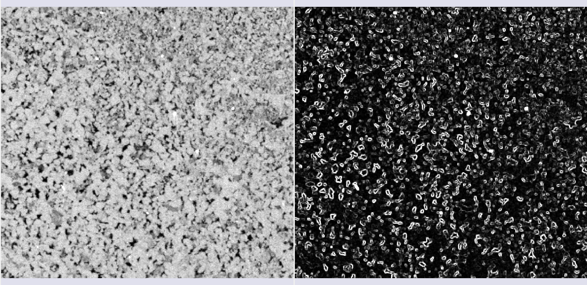
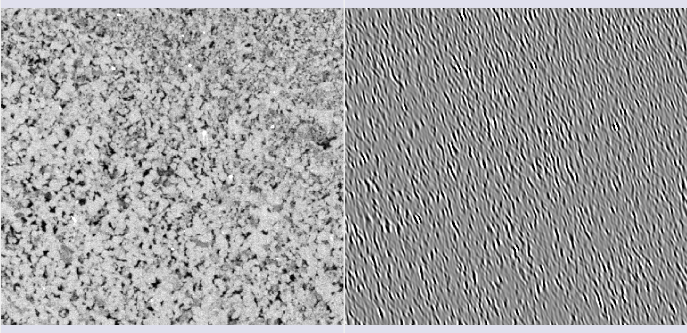
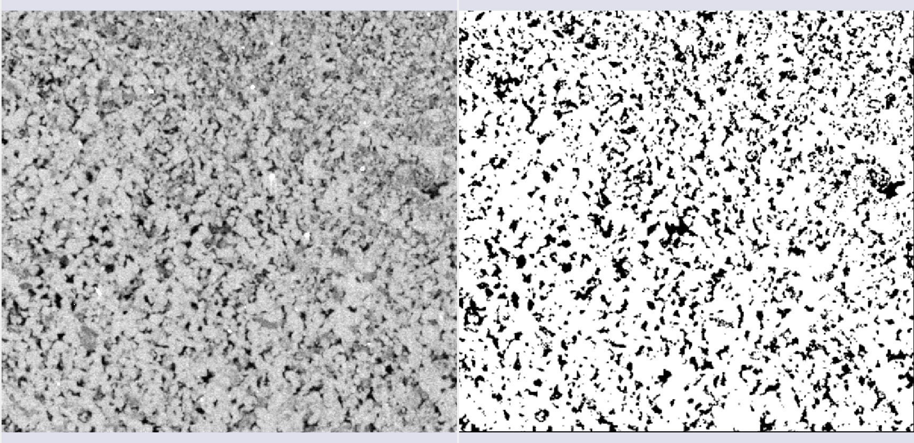
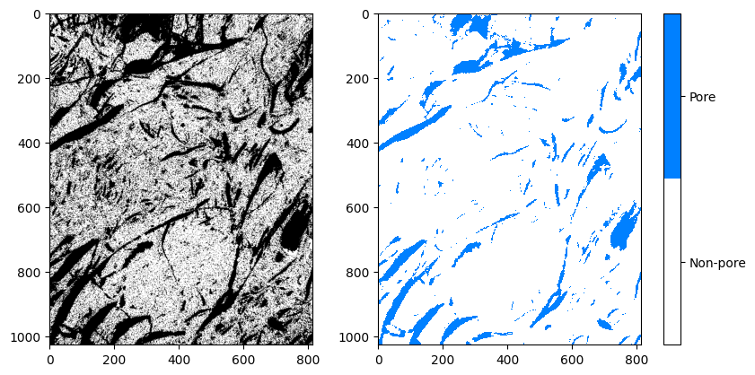
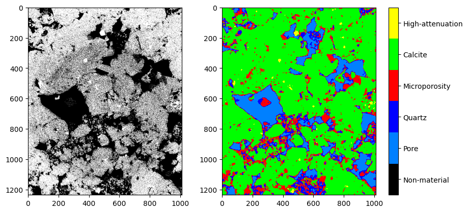

Segmentation
Manual Segmentation
This module is used to specify segments (structures of interest) in 2D/3D/4D images. Some of the tools mimic a painting interface, such as Photoshop or GIMP, but operate on 3D arrays of voxels instead of 2D pixels. The module offers editing of overlapping segments, display in both 2D and 3D views, detailed visualization options, editing in 3D views, creation of segmentations by interpolation or extrapolation on some slices, and editing on slices in any orientation.
The Segment Editor does not edit labelmap volumes, but segmentations can be easily converted to/from labelmap volumes using the Explorer section and utilizing the secondary mouse button menu.
Segmentation and Segment
The result of a segmentation is stored in the segmentation node in GeoSlicer. A segmentation node consists of several segments.
A segment specifies the region for a single structure. Each segment has a number of properties, such as name, preferred display color, content description (capable of storing standard DICOM encoded entries), and custom properties. Segments can overlap in space.
Binary Labelmap Representation
The binary labelmap representation is probably the most commonly used representation because it is the easiest to edit. Most software using this representation stores all segments in a single 3D array, so each voxel can belong to a single segment: segments cannot overlap. In GeoSlicer, overlap between segments is allowed. To store overlapping segments in binary maps, segments are organized into layers. Each layer is internally stored as a separate 3D volume, and a volume can be shared among multiple non-overlapping segments to save memory.
In a segmentation with the source representation set to binary map, each layer can temporarily have different geometry (origin, spacing, axis directions, extents) - to allow moving segments between segmentations without unnecessary quality loss (each resampling of a binary map can lead to minor changes). All layers are forced to have the same geometry during certain editing operations and when the segmentation is saved to file.
Panels and their usage
 |
|---|
| Figure 1: Overview of the segment editor module. |
Main options
-
Segmentation: choose the segmentation to be edited.
-
Source volume: choose the volume to be segmented. The source volume selected the first time after the segmentation is created is used to determine the labelmap representation geometry of the segmentation (extent, resolution, axis directions, origin). The source volume is used by all editor effects that use the intensity of the segmented volume (e.g., threshold, level tracing). The source volume can be changed at any time during the segmentation process.
-
Add: Add a new segment to the segmentation and select it.
-
Remove: select the segment you want to delete and click Remove segment to delete it from the segmentation.
-
Show 3D: display your segmentation in the 3D viewer. This is a toggle button. When enabled, the surface is automatically created and updated as the user segments. When disabled, the conversion is not continuous, and the segmentation process is faster. To change the surface creation parameters: click the arrow next to the button, go to the "Smoothing factor" option, and use the value bar to edit a conversion parameter value. Setting the smoothing factor to 0 disables smoothing, making updates much faster. Set the smoothing factor to 0.1 for weak smoothing and 0.5 or higher for stronger smoothing.
Segments Table
This table displays the list of all segments.
Table columns:
-
Visibility (eye icon): Toggles segment visibility. To customize the display: open slice display controls (click the double-arrow button icons at the top of a slice viewer) or go to the Segmentations module.
-
Color swatch: set the color and assign the segment to standardized terminology.
-
Status (flag icon): This column can be used to set the editing status of each segment which can be used to filter the table or mark segments for further processing. Not started: default initial state, indicates that editing has not yet occurred. In progress: when a “not started” segment is edited, its status is automatically changed to this. Completed: the user can manually select this state to indicate that the segment is complete. Flagged: the user can manually select this state for any custom purpose, e.g., to draw the attention of an expert reviewer to the segment.
Effects section
 |
|---|
| Figure 2: Effects section of the segment editor. |
-
Effects toolbar: Select the desired effect here. See below for more information on each effect.
-
Options: The options for the selected effect will be displayed here.
-
Undo/Redo: The module saves the state of the segmentation before each effect is applied. This is useful for experimentation and error correction. By default, the last 10 states are remembered.
Effects
Effects operate by clicking the Apply button in the effect's options section or by clicking and/or dragging in the slice or 3D views.
 Paint
Paint
-
Choose the radius (in millimeters) of the brush to be applied.
-
Left-click to apply a single circle.
-
Left-click and drag to fill a region.
-
A trail of circles is left, which is applied when the mouse button is released.
-
Sphere mode applies the radius to slices above and below the current slice.
 Draw
Draw
-
Left-click to create individual points of an outline.
-
Left-drag to create a continuous line of points.
-
Double left-click to add a point and fill the outline. Alternatively, right-click to fill the current outline without adding more points.
Note
The Scissors effect can also be used for drawing. The Scissors effect works in both slice and 3D views, can be configured to draw on more than one slice at a time, can also erase, can be restricted to drawing horizontal/vertical lines (using rectangle mode), etc.
 Erase
Erase
Similar to the Paint effect, but the highlighted regions are removed from the selected segment instead of added.
If the Mask / Editable Area is set to a specific segment, the highlighted region is removed from the selected segment and added to the mask segment. This is useful when a part of a segment needs to be separated into another segment.
 Level Tracing
Level Tracing
-
Moving the mouse defines an outline where pixels have the same background value as the current background pixel.
-
Left-clicking applies this outline to the label map.
 Grow from Seeds
Grow from Seeds
Draw the segment within each anatomical structure. This method will start from these "seeds" and expand them to achieve the complete segmentation.
-
Initialize: Click this button after the initial segmentation is completed (using other editor effects). The initial calculation may take longer than subsequent updates. The source volume and automatic fill method will be locked after initialization, so if any of these need to be changed, click Cancel and initialize again.
-
Update: Update the completed segmentation based on altered inputs.
-
Auto-update: Enable this option to automatically refresh the result preview when the segmentation is changed.
-
Cancel: Remove result preview. Seeds are kept unchanged, so parameters can be changed, and segmentation can be restarted by clicking Initialize.
-
Apply: Replace seed segments with visualized results.
Notes:
-
Only visible segments are used by this effect.
-
At least two segments are required.
-
If a part of a segment is erased or painting is removed using Undo (and not replaced by another segment), it is recommended to cancel and initialize again. The reason is that the effect of adding more information (painting more seeds) can propagate to the entire segmentation, but removing information (removing some seed regions) will not change the complete segmentation.
-
The method uses an improved version of the grow-cut algorithm described in Liangjia Zhu, Ivan Kolesov, Yi Gao, Ron Kikinis, Allen Tannenbaum. An Effective Interactive Medical Image Segmentation Method Using Fast GrowCut, International Conference on Medical Image Computing and Computer Assisted Intervention (MICCAI), Interactive Medical Image Computing Workshop, 2014.
 Margin
Margin
Increases or decreases the selected segment by the specified margin.
By enabling Apply to visible segments, all visible segments of the segmentation will be processed (in the order of the segments list).
 Smoothing
Smoothing
Smooths segments by filling holes and/or removing extrusions.
By default, the current segment will be smoothed. By enabling Apply to visible segments, all visible segments of the segmentation will be smoothed (in the order of the segments list). This operation can be time-consuming for complex segmentations. The Joint smoothing method always smooths all visible segments.
Clicking the Apply button, the entire segmentation is smoothed. To smooth a specific region, left-click and drag in any slice or 3D view. The same smoothing method and strength are used in both whole-segmentation mode and region-based smoothing mode (brush size does not affect Smoothing strength, it only facilitates designating a larger region).
Available methods:
-
Median: removes small extrusions and fills small gaps while keeping smooth contours virtually unchanged. Applied only to the selected segment.
-
Opening: removes extrusions smaller than the specified kernel size. Adds nothing to the segment. Applied only to the selected segment.
-
Closing: fills sharp corners and holes smaller than the specified kernel size. Removes nothing from the segment. Applied only to the selected segment.
-
Gaussian: smooths all details. The strongest possible smoothing, but tends to shrink the segment. Applied only to the selected segment.
-
Joint smoothing: smooths multiple segments at once, preserving the watertight interface between them. If segments overlap, the segment higher in the segments table takes precedence. Applied to all visible segments.
 Scissors
Scissors
Cuts segments to the specified region or fills regions of a segment (often used with masking). Regions can be drawn in both slice view and 3D views.
-
Left-click to start drawing (freeform or elastic circle/rectangle)
-
Release button to apply
By enabling Apply to visible segments, all visible segments of the segmentation will be processed (in the order of the segments list).
 Islands
Islands
Use this tool to process "islands", i.e., connected regions that are defined as groups of non-empty voxels that touch each other but are surrounded by empty voxels.
-
Keep largest island: keeps the largest connected region. -
Remove small islands: keeps all connected regions that are larger than theminimum size. -
Split islands into segments: creates a single segment for each connected region of the selected segment. -
Keep selected island: after selecting this mode, click on a non-empty area in the slice view to keep that region and remove all other regions. -
Remove selected island: after selecting this mode, click on a non-empty area in the slice view to remove that region and preserve all other regions. -
Add selected island: after selecting this mode, click on an empty area in the slice view to add that empty region to the segment (fill hole).
 Logical Operators
Logical Operators
Apply basic copy, clear, fill, and Boolean operations to the selected segment(s). See more details on the methods by clicking “Show details” in the effect description in the Segment Editor.
 Mask Volume
Mask Volume
Erase inside/outside a segment in a volume or create a binary mask. The result can be saved to a new volume or overwrite the input volume. This is useful for removing irrelevant details from an image or creating masks for image processing operations (such as registration or intensity correction).
-
Operation:-
Fill inside: sets all voxels of the selected volume to the specifiedFill valueinside the selected segment. -
Fill outside: sets all voxels of the selected volume to the specifiedFill valueoutside the selected segment. -
Fill inside and outside: creates a binary labelmap volume as output, filled with theFill outside valueandFill inside value. Most image processing operations require the background region (outside, ignored) to be filled with the value 0.
-
-
Smooth border: if set to >0, the transition between inside/outside the mask is gradual. The value specifies the standard deviation of the Gaussian blur function. Larger values result in a smoother transition. -
Input volume: voxels from this volume will be used as input for the mask. The geometry and voxel type of the output volume will be the same as this volume. -
Output volume: this volume will store the mask result. While it can be the same as the input volume, it is often better to use a different output volume, because then options can be adjusted, and the mask can be recalculated multiple times.
 Color Threshold
Color Threshold
This segmentation editing effect, called "Color threshold", allows the segmentation of images based on user-defined color ranges. The effect can operate in HSV or RGB color modes, allowing adjustments to hue, saturation, and value components. It also has adjustments for red, green, and blue levels. The effect offers a real-time visualization of the segmentation, using a preview pulse to help the user refine parameters before permanently applying changes. Additionally, the effect includes advanced functionalities, such as color space conversion and manipulation of circular ranges, enabling precise and customized segmentation.
 Connectivity
Connectivity
This "Connectivity" effect allows segment selection in Geoslicer, enabling users to calculate connected regions within a segment in a specific direction. The effect includes configurable parameters such as connectivity jumps, direction, and output name, making it a versatile tool for detailed segmentation tasks. It efficiently handles connected component analysis and generates a new segment based on user-defined settings.
 Boundary Removal
Boundary Removal
Removes the borders of visible segments using an edge detection filter. Only visible segments are modified in the process.
- Filter: Only gradient magnitude so far.
- Threshold adjustment: Adjusts the threshold to find a suitable border.
- Keep filter result: Check this option to keep the filter result as a new volume, for inspection.
 Expand Segments
Expand Segments
Applies the watershed process to expand visible segments, filling the empty spaces of the segmentation. The selected visible segments are used as seeds, or minima, from which they are expanded.
 Smart Foreground
Smart Foreground
Automatically segments the useful area of an image or volume, i.e., the region that actually corresponds to the sample, rejecting border regions. By enabling the fragmentation feature (currently available only for thin sections), any fissures between rock fragments also cease to be considered useful area. This effect is convenient for workflows where areas adjacent to the rock might negatively influence results, such as determining the porosity rate of the sample.
Multiple Thresholds
The multiple threshold effect, available in the Volumes, Image Log, Core, and Multiscale environments, allows the user to segment a 3D volume based on multiple threshold values. Depending on the number of selected segments, a histogram with thresholds appears colored in the interface. Each segment will be separated by the threshold, with the next segment starting at a slightly higher threshold on the grayscale. This way, the image can be easily segmented based on its grayscale values.

-
Operation:-
Fill internally: segments the entire useful area of the image/volume; -
Erase externally: given any already filled segment, it excludes all its region that resides outside the useful area.
-
-
Fragmentation:-
Split: enables/disables the fragmentation feature. Recommended only for polarized light thin section (PP) images. Once enabled, it allows choosing between:Keep all: considers all fragments as useful area;Filter the N largest: only the N fragments with the largest area will be preserved, where N is the value specified by the user.
-
AI Segmenter
The MicroCT Segmenter module offers the Model Training option, which performs the segmentation of an entire sample based on a simple initial annotation. Based on this annotation, different methods train a model and infer the result across the entire image or within a region of interest (SOI). The trained model can be saved and reused on other images.
Random-Forest Method
Random-Forest is a method that constructs multiple decision trees during training to create a robust model. The final classification is determined by the majority vote of the trees. For this method, it is possible to select different features (characteristics) extracted from the image for training.
Feature selection (features)
- Raw input image: Adds the image itself as one of the inputs.
- Gaussian filter: Applies a Gaussian kernel of a chosen radius as a filter to the image.
 |
|---|
| Figure 1: Gaussian filter. |
- Winvar filter: Variance-based filter, calculates \(\left\lt x^2\right\gt-\left\lt x\right\gt^2\) within a kernel of a chosen radius.
|  |
|---|
| Figure 2: Winvar filter. |
- Gabor filters: Calculated in equally spaced \(\theta\) directions, these filters are composed of a Gaussian part and a sinusoidal part. In 2D, the formula is:
|  |
|---|
| Figure 3: Gabor filter in one of the \(\theta\) directions. |
- Minkowsky functionals: Morphological parameters that describe the data geometry, associated with volume, surface, mean curvature, and Euler characteristic.
  |
|---|
| Figure 4: Minkowsky filters. |
- Variogram range: Measures the average variation of values as a function of distance. The range is the distance where the variation is maximal. It is useful for differentiating textures and grain sizes.
 |
|---|
| Figure 5: Variogram range. |
Bayesian Inference Method
This method uses Bayes' rule to classify image pixels, updating the probabilities of a pixel belonging to a class based on annotations.
The approach in GeoSlicer assumes a Multivariate Normal Distribution for the likelihood function, where the mean \(\mu_s\) and covariance matrix \(\Sigma_s\) of each segment are calculated from the annotations:
Where \(x_p\) is the pixel vector in a window, and \(\mu_s\) and \(\Sigma_s\) are the mean and covariance of segment \(s\).
The inference of the probability of each segment for a pixel is obtained by Bayes' rule, and the segment that maximizes this probability is chosen.
To optimize performance, some treatments are applied, such as percentile transformation in MicroCT images and conversion to HSV format in thin section images. Additionally, to speed up the process, it is possible to calculate covariance sparsely, using only the principal axes or planes, which is especially useful in 3D.
Below are some results of the method's application to tomography and thin section images:
 |
|---|
| Figure 6: Semi-automatic segmentation using Bayesian inference on MicroCT data. |
 |
|---|
| Figure 7: Semi-automatic segmentation using Bayesian inference on thin section data. |
Pre-trained Models
GeoSlicer offers pre-trained models based on the U-Net architecture to solve two common problems in rock microtomography: binary segmentation (pore/non-pore) and basins segmentation (multiple minerals).
Training
Model training was performed with a vast dataset (68 volumes for the binary model and 106 for the basins model), applying a linear histogram transformation to facilitate generalization. Volumes were cropped into 128³ voxel subvolumes, and 75% of them underwent random transformations (data augmentation) to improve model robustness. To handle class imbalance (pores are less common), the Tversky loss function was used, which adjusts the model's sensitivity to minority classes, improving accuracy in pore detection.
Results
The pre-trained models show high-quality results. The binary segmentation model is particularly accurate in identifying pores, while the basins model offers complete segmentation of different minerals.
Binary Segmentation
|  |
|---|
| Figure 8: Comparison between the original image, the annotation, and the binary segmentation result. |
Basins Segmentation
|  |
|---|
| Figure 9: Comparison between the original image, the annotation, and the basins segmentation result. |
References
- SCHMIDT, U. et al. (2018). Cell detection with star-convex polygons. In: Medical Image Computing and Computer Assisted Intervention–MICCAI 2018. Springer.
- SALEHI, S. S. M. et al. (2017). Tversky loss function for image segmentation using 3D fully convolutional deep networks. In: Machine Learning in Medical Imaging. Springer.
- WEIGERT, M. et al. (2020). Star-convex polyhedra for 3D object detection and segmentation in microscopy. In: Proceedings of the IEEE/CVF winter conference on applications of computer vision.
- BAI, M. & URTASUN, R. (2017). Deep watershed transform for instance segmentation. In: Proceedings of the IEEE conference on computer vision and pattern recognition.
- HE, K. et al. (2017). Mask r-cnn. In: Proceedings of the IEEE international conference on computer vision.
- RONNEBERGER, O. et al. (2015). U-net: Convolutional networks for biomedical image segmentation. In: Medical Image Computing and Computer-Assisted Intervention–MICCAI 2015. Springer.
Segment Inspector
This module provides several methods to analyze a segmented image. Particularly, the Watershed and Separate Objects algorithms allow a segmentation to be fragmented into multiple partitions, or multiple segments. It is generally applied to the segmentation of porous space to calculate the metrics of each porous element. The input is a segmentation node or labelmap volume, a region of interest (defined by a segmentation node), and the master image/volume. The output is a labelmap where each partition (pore element) is in a different color, a table with global parameters, and a table with the different metrics for each partition.
Panels and their use
 |
|---|
| Figure 1: Overview of the Segment Inspector module. |
Main options
The Segment Inspector module interface is composed of Inputs, Parameters, and Output.
Single input
 |
|---|
| Figure 2: Overview of the inputs in the Segment Inspector module. |
-
Segmentation: Input for the segmentation used in the partition.
-
Region SOI: Choose a segmentation of interest that contains at least part of the segmentation used in Segmentation.
-
Image: Field automatically filled with the reference node of the segmentation used in Segmentation.
Attributes
 |
|---|
| Figure 3: Segment attributes in the Segment Inspector module. |
-
Segments: Segments contained in the segmentation selected in Segmentation. The list shows the visualization of the segment via the eye icon. For the fragmentation method to be initialized, a segment must be selected.
-
Calculate proportions: Checkbox to display the proportions of each segment in the image.
-
Dimension(px): Displays the dimensions of the selected image.
Parameters and Methods
Watershed
The Watershed algorithm works by simulating the expansion of "watersheds" from points marked as local minima. As "water" fills the valleys, it defines the boundaries between different regions. This approach is widely used in applications where it is necessary to separate objects or pores in materials, taking advantage of contrasts between regions.
 |
|---|
| Figure 4: Watershed in the Segment Inspector module. |
-
Size Filter(mm): Controls the maximum segmentation range, directly influencing the size and connectivity of the segmented regions. Small values are used when you want to segment many fine details, whereas large values are used when the focus is on large areas or connected objects.
-
2D throat analysis(beta): Adds 2D throat analysis metrics to the report.
-
Smooth factor: Parameter that adjusts the degree of smoothness on the edges of segmented regions, allowing control between preserving details and reducing noise or irregularities. With high factors, the segmentation will be smoother and simplified, but with loss of small details.
-
Minimun Distance: parameter that determines the smallest allowed distance between two local maxima or segmented objects. A larger value for this parameter will merge nearby objects, simplifying the segmentation, while a smaller value will allow the separation of closer objects, resulting in a more detailed segmentation.
-
Orientation Line: The orientation parameter allows the algorithm to align itself properly with the image features, improving segmentation accuracy.
Separate Objects
The "Separate Objects" segmentation method identifies connected regions in a binary matrix that represent information objects. This process is especially useful in porosity analysis, where it is important to distinguish different connected regions within a volume.
 |
|---|
| Figure 5: Separate Objects in the Segment Inspector module. |
-
Size Filter(mm): Controls the maximum segmentation range, directly influencing the size and connectivity of the segmented regions. Small values are used when you want to segment many fine details, whereas large values are used when the focus is on large areas or connected objects.
-
Orientation Line: The orientation parameter allows the algorithm to align itself properly with the image features, improving segmentation accuracy.
GPU Watershed
The Deep Watershed technique combines the traditional Watershed concept with deep neural networks to obtain more precise and robust segmentation. Using the power of deep learning, the method enhances the detection of boundaries and objects in complex scenarios, such as the analysis of porous materials with multiple levels of overlap. This approach is particularly effective for handling three-dimensional volumes and for performing precise segmentations in noisy images.
 |
|---|
| Figure 6: GPU Watershed in the Segment Inspector module. |
-
Split Threshold(0-1): Controls the maximum segmentation range, directly influencing the size and connectivity of the segmented regions. Small values are used when you want to segment many fine details, whereas large values are used when the focus is on large areas or connected objects.
-
2D throat analysis(beta): Adds 2D throat analysis metrics to the report.
-
Base volume (px): This parameter represents a base value that can be related to the size or scale of the volume being processed. It serves as a reference for calculating the depth or layers of the volume that will be analyzed.
-
Intersection (px): This parameter is used to adjust how much regions within the volume can overlap during segmentation.
-
Border (px): This parameter defines the size or thickness of the borders that will be considered when calculating the depth layers in the volume.
-
Background Threshold(0-1): Acts as a cutoff point. All values below this threshold are considered to belong to the background, while values above the threshold are considered to be parts of objects or significant regions within the image or volume.
Transitions Analysis
Transitions Analysis focuses on examining the changes between regions or segments of an image. This method is mainly employed to study the mineralogy of samples.
 |
|---|
| Figure 7: Transitions Analysis in the Segment Inspector module. |
- Include Background: Uses the total dimensions of the input image for analysis.
Basic Petrophysics
|
|---|
| Figure 8: Transitions Analysis in the Segment Inspector module. |
- Include Background: Uses the total dimensions of the input image for analysis.
Output
Enter a name to be used as a prefix for the results object (labelmap where each partition (pore element) is in a different color, a table with global parameters, and a table with the different metrics for each partition).
Properties / Metrics:
- Label: partition label identification.
- mean: mean value of the input image/volume within the partition region (pore/grain).
- median: median value of the input image/volume within the partition region (pore/grain).
- stddev: Standard deviation of the input image/volume value within the partition region (pore/grain).
- voxelCount: Total number of pixels/voxels in the partition region (pore/grain).
- area: Total area of the partition (pore/grain). Unit: mm².
- angle: Angle in degrees (between 270 and 90) related to the orientation line (optional, if no line is selected, the reference orientation is the upper horizontal).
- max_feret: Major Feret diameter. Unit: mm.
- min_feret: Minor Feret diameter. Unit: mm.
- mean_feret: Average of the minimum and maximum axes.
- aspect_ratio: min_feret / max_feret.
- elongation: max_feret / min_feret.
- eccentricity: square(1 - min_feret / max_feret), related to the equivalent ellipse (0 ≤ e < 1), equal to 0 for circles.
- ellipse_perimeter: Perimeter of the equivalent ellipse (equivalent ellipse with axes given by the minimum and maximum Feret diameters). Unit: mm.
- ellipse_area: Area of the equivalent ellipse (equivalent ellipse with axes given by the minimum and maximum Feret diameters). Unit: mm².
- ellipse_perimeter_over_ellipse_area: Perimeter of the equivalent ellipse divided by its area.
- perimeter: Actual perimeter of the partition (pore/grain). Unit: mm.
- perimeter_over_area: Actual perimeter divided by the area of the partition (pore/grain).
- gamma: Circularity of an area calculated as 'gamma = perimeter / (2 * square(PI * area))'.
- pore_size_class: Pore class symbol/code/id.
- pore_size_class_label: Pore class label.
Definition of pore classes:
- Micropore: class = 0, max_feret less than 0.062 mm.
- Very small mesopore: class = 1, max_feret between 0.062 and 0.125 mm.
- Small mesopore: class = 2, max_feret between 0.125 and 0.25 mm.
- Medium mesopore: class = 3, max_feret between 0.25 and 0.5 mm.
- Large mesopore: class = 4, max_feret between 0.5 and 1 mm.
- Very large mesopore: class = 5, max_feret between 1 and 4 mm.
- Small megapre: class = 6, max_feret between 4 and 32 mm.
- Large megapre: class = 7, max_feret greater than 32 mm.